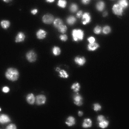
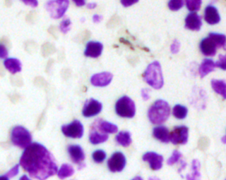
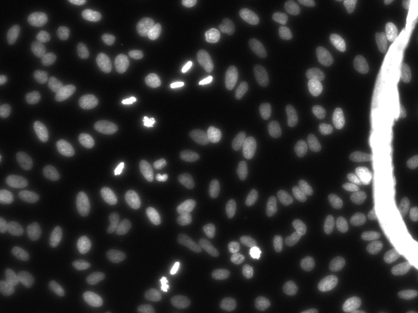
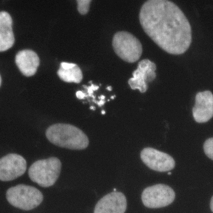
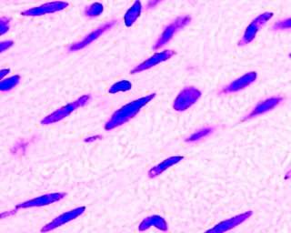

Broad Bioimage Benchmark Collection
Annotated biological image sets for testing and validation
Kaggle 2018 Data Science Bowl
Accession number BBBC038 · Version 1
Example images
-

-

-

-

-

Description of the biological application
This image data set was created exclusively for the Kaggle 2018 Data Science Bowl sponsored by Booz Allen Hamilton with cash prizes. This image set was a testing ground for the application of novel and cutting edge approaches in computer vision and machine learning to the segmentation of the nuclei belonging to cells from a breadth of biological contexts. Over 800 teams participated in the competition and over 2000 entries were submitted for scoring. These images form a diverse collection of biological images collectively containing tens of thousands of nuclei. The variety within the data set reflects the type of images collected by research biologists at universities, bio-techs, and hospitals. The nuclei in the images are derived from a range of organisms including humans, mice, and flies. In addition, nuclei have been treated and imaged in a variety of conditions including fluorescent and histology stains, several magnifications, and varying quality of illumination. Finally, nuclei appear in different contexts and states including cultured mono-layers, tissues, and embryos, and cell division, genotoxic stress, and differentiation. Refer to the metadata file that accompanies the data set for a comprehensive look at what defines each image.
Images
For each image in an image set, for example "stage1_train", there are two folders: 1) A folder named "images" that contains the image of the nuclei, and 2) a folder named "masks", which contains masks that map to every nuclei in the corresponding image.
Ground truth
In addition to the images there is an accompanying collection of annotations. The annotations were originally created by the Broad Imaging Platform. The annotations take the form of a collection of masks for each image of nuclei. Each mask is a PNG file that contains the segmentation of exactly one nuclei in a folder with the same name as the image it refers to. Like the masks, the images of nuclei are also PNG.
The ground truth and annotations were originally created by the Broad Imaging Platform using a combination of GIMP and a web-based annotation tool created internally.
For more information
These images were curated from a variety of sources by the Imaging Platform at the Broad Institute for the 2018 Data Science Bowl. Please contact the Imaging Platform and/or Anne Carpenter(Director of the Imaging Platform) for more information.
Published results using this image set
These datasets will be evaluated in a publication to be submitted.
Recommended citation
"We used image set BBBC038v1, available from the Broad Bioimage Benchmark Collection [Ljosa et al., Nature Methods, 2012]."
Copyright
 To the extent possible under law, the various contributors of the imagesets have waived all copyright and related or neighboring rights to BBBC038v1.
To the extent possible under law, the various contributors of the imagesets have waived all copyright and related or neighboring rights to BBBC038v1.